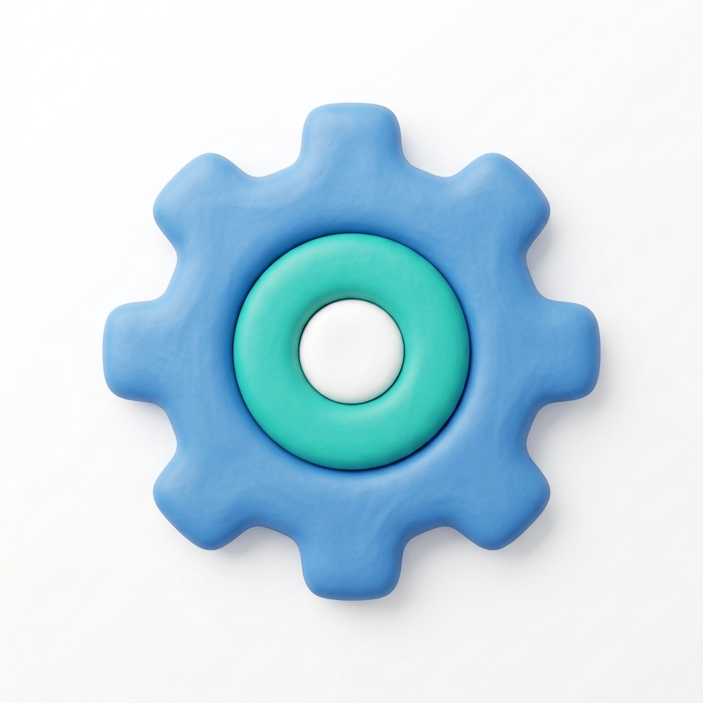

Calcula Tu Agua fue diseñada con una filosofía clara: **ser 100% interactiva, ultraliviana y capaz de funcionar sin conexión a internet (offline)**. Para cumplir esto en sectores vulnerables o campamentos con poca señal, la aplicación no utiliza bases de datos complejas en servidores lejanos ni consume tus datos móviles cargando código pesado.
Toda la matemática, las tarifas del agua de Chile y la lógica inteligente de consejos se procesan directamente en el navegador de tu teléfono o computador usando **JavaScript puro**. Aquí te explicamos paso a paso cómo viajan tus respuestas por el código de la web para armar tus resultados personalizados.
Diagrama de Flujo Interactivo
Presiona los números en la barra de tiempo a continuación para seguir el recorrido de los datos desde que inicias la encuesta hasta que obtienes tu reporte final:

Viaje de la Información Paso a PasoFilosofía Client-side y Privacidad
Al procesar toda la información de forma local (dentro de tu propio dispositivo), Calcula Tu Agua garantiza **privacidad absoluta**. No guardamos tus hábitos de consumo ni tu comuna en servidores externos.
Además, gracias a esta arquitectura, una vez que cargas la página, puedes apagar tu conexión a internet o el plan de datos y la calculadora continuará simulando consumos y mostrando los consejos de forma idéntica, permitiendo llevar esta herramienta de educación ambiental a cualquier rincón de Chile.